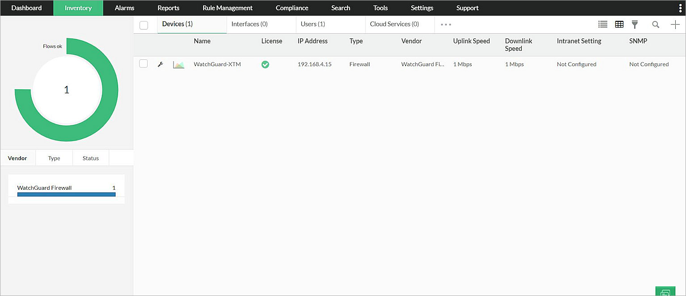

ManageEngine™ Firewall Analyzer is an agentless log analytics and configuration management software product that helps network administrators to centrally collect, archive, analyze security device log messages, and generate forensic reports from the data. This document describes the steps to integrate ManageEngine Firewall Analyzer with your WatchGuard Firebox®.
To complete this integration, you must first deploy Firewall Analyzer.
Platform and Software
The hardware and software used to complete the steps in this document include:
- Firebox or WatchGuard device with Fireware version 12.8.1
- Firewall Analyzer 12.6.101 installed on Microsoft Windows 10 Pro
Test Topology
This diagram shows the test topology for this integration.

To set up Firewall Analyzer, refer to the Firewall Analyzer Installation Guide. In this document, we describe how to listen, receive, and index Firebox syslog data on Firewall Analyzer and show how it works.
Set Up Firebox to Send Syslog to Firewall Analyzer
To set up your Firebox to send syslog messages to Fireware Analyzer, you can use Policy Manager or Fireware Web UI. In this example, we use Web UI.
- Navigate to System > Logging > Syslog Server.
- Select the Send Log Messages to the Syslog Server at This IP Address check box.
- Click Add.
The Syslog Server dialog box opens.
- In the IP Address text box, type the IP address of the Firewall Analyzer.
- In the Port text box, type the port used to receive syslog, as defined on Firewall Analyzer. Note that Firewall Analyzer uses UDP port 1514 as the default listener port.
- From the Log Format drop-down list, select Syslog.
- Other items are optional.
- Click OK.

- Click Save.
Set Up Firewall Analyzer
From the Firewall Analyzer setup wizard, you can configure the port used by the web server. By default, the wizard configures port 8060.
Test the Integration
You can view the information of a firewall from Firewall Analyzer.
- Log in to Firewall Analyzer.
- Make sure that your Firebox is sending log messages to Firewall Analyzer. Then, from the computer that has the Firewall Analyzer installation, open a web browser and, in the address bar, type:
http://localhost:xxxx
Where “xxxx” is the web server port that you configured in the Firewall Analyzer setup wizard. - Select Dashboard > Overview > Firewall Summary to view firewall information.
- Select Inventory to view active device information.

- Select Report > Firewall Report to view the report.